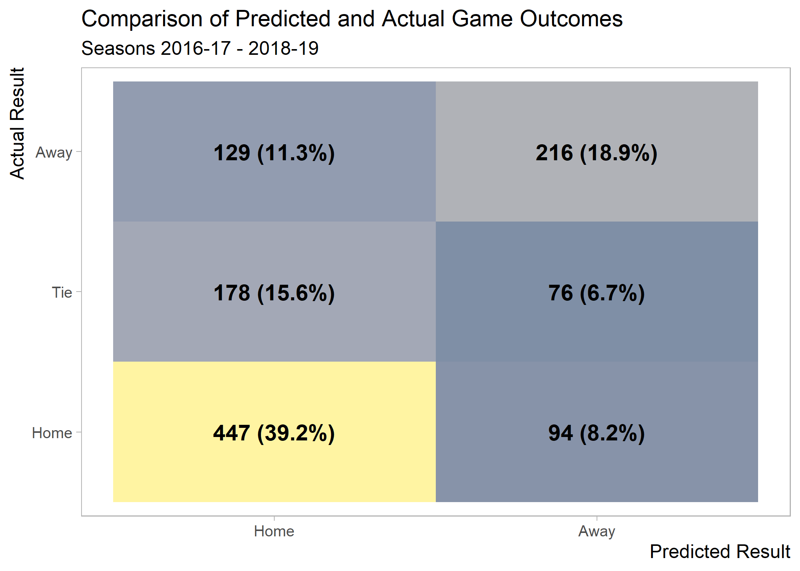
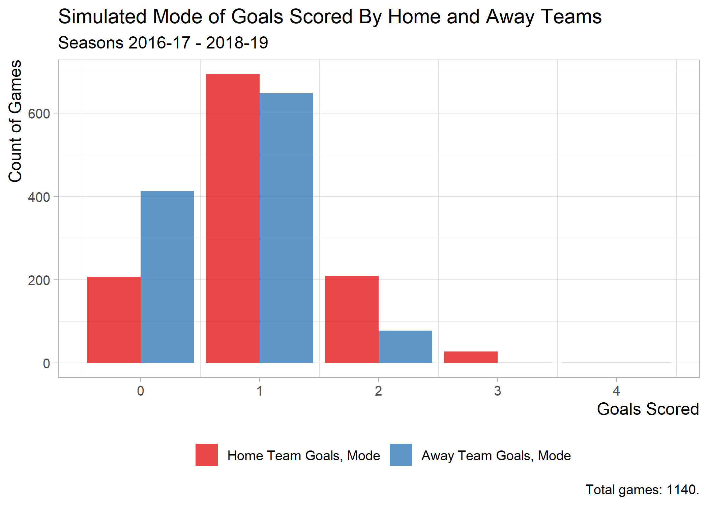
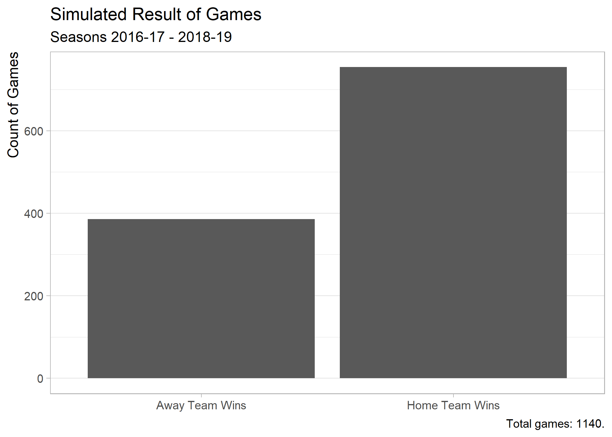

Ranking English Premier League Teams
I haven’t had as much time (since summer of 2018) to write due to taking classes in pursuit of a degree from Georgia Tech’s Online Master of Science in Analytics (OMSA) program. On the other hand, the classes have given me some ideas for future content. And, in the case of the Bayesian Statistics class that I took this past fall, there’s content that translates well to a blog post directly. What follows is a lightly edited version of the report that I submitted at the end of the semester for this class.
Introduction
I model and predict English Premier League (EPL) game outcomes using Bayesian methods. Specifically, I estimated goals scored by each team in a given game as independent Poisson processes, taking the difference of the estimated points scored on each side to determine game winners. More broadly, one may call this a hierarchical Bayesian Poisson model.
Why model goals scored using a Poisson distribution? By definition, it “is a discrete probability distribution that expresses the probability of a given number of events occurring in a fixed interval of time with a known constant rate.” In the context of soccer, the fixed interval of time is the 90 minutes of a game (disregarding injury time and over time), and the known constant rate is the expected number of goals scored per minute. Importantly, I must make the assumption that the rate of scored goals is the same across all minutes of a game. 1 Additionally, when computing the difference between Poisson distributions, I must assume that the two distributions are independent of one another. 2
Using Poisson distributions to model soccer scores is certainly not a novel concept. 3 4 In particular, I would like to acknowledge the work of Rasmus Baath’s, whose series of blog posts exemplifying the use of R and JAGS to model scores in La Liga games between the 2008-09 to 2012-13 season served as a guide for the analysis that I conduct here. 5 6
Data Collection
For this project I retrieved game scores and outcomes for the previous three seasons of EPL games (i.e. from the 2016-17 season through the 2018-2019 season).
Modeling
My model is formally defined as follows.
\[ \begin{array}{c} g_h \sim \mathcal{Pois}(\lambda_{h,i,j}) \\ g_a \sim \mathcal{Pois}(\lambda_{a,i,j}) \\ \log(\lambda_{h,i,j}) = \text{baseline}_h + (z_i - z_j) \\ \log(\lambda_{a,i,j}) = \text{baseline}_a + (z_j - z_i). \\ \end{array} \]
This model estimates the goals scored by the home team, \(g_h\), and the goals scored by the away team, \(g_a\), in a given game between home team, \(\text{tm}_h\), and away team, \(\text{tm}_a\), as random variables coming from independent Poisson processes, \(\mathcal{Pois}(\lambda_{h,i,j})\) and \(\mathcal{Pois}(\lambda_{a,i,j})\). The log of the rate of goals scored by the home team, \(\lambda_{h,i,j}\), in a game between \(\text{tm}_i\) and \(\text{tm}_j\) is modeled as the sum of a “baseline” average of goals scored by any given team playing at home, \(\text{baseline}_h\), and the difference between the team “strength” \(z\) of teams \(i\) and \(j\) in a given game. I define the log of the goal rate by the away team, \(\lambda_{a,i,j}\), in a similar fashion. 7 It is important to distinguish the baseline levels for home and away so as to account for “home field advantage”. (One should expect to find that \(\text{baseline}_h > \text{baseline}_a\) in the posterior estimates.)
Since I am employing a Bayesian approach, I need to model priors as well. I define them as follows.
\[ \begin{array}{c} \text{baseline}_h \sim \mathcal{N}(0, 2^2) \\ \text{baseline}_a \sim \mathcal{N}(0, 2^2) \\ z_{i} \sim \mathcal{N}(z_{\text{all}} , \sigma^2_{\text{all}}) \quad \text{tm}_i > 1 \\ z_{\text{all}} \sim \mathcal{N}(0, 2^2) \\ \sigma_{\text{all}} \sim \mathcal{U}(0, 2). \end{array} \]
There are a couple of things to note about these priors. First, I must “zero”-anchor the strength estimate \(z\) of one team. (This is manifested by \(\text{tm}_i > 1\).) Here, I choose the first team alphabetically—Arsenal. Second, the priors are intentionally defined to be relatively vague (although not too vauge) so as to allow the posterior estimates to be heavily defined by the data rather than the priors. Note that the standard deviation of the overall team strength parameter \(z_{\text{all}}\), defined as \(2\) on a log scale, corresponds to an interval of \(\left[e^{-2}, e^2\right] = \left[0.13, 7.40\right]\) on an unstransformed scale, i.e. goals scored per game.
I leverage the {R2OpenBUGs} package to create this model with R on the “frontend” and generate the results using the OpenBUGS engine on the “backend”. Regarding the implementation itself, note that I run 100,000 simulations (n.iter), minus 1,000 “burn-in” runs (n.burn).
The raw results are as follows. (As a quick “validation” of these results, note that \(\text{baseline}_h > \text{baseline}_a\), as hypothesized.)
Interpretation & Discussion
Next, I correspond the strength estimates \(z\) to teams. Notably, I must “re-add” the zero-anchored team—Arsenal (whose \(z\) is assigned a dummy value of 1). To do this, I impute its credible set quantiles using the values of the overall strength term \(z_{\text{all}}\).

It’s not surprising to see that the strength (\(z\)) corresponding to all but three teams—Liverpool, Man City, and Tottenham—is negative. These three teams, followed closely by Arsenal have been regarded as the best teams for the past two or three EPL seasons. So, relative to Arsenal, all other teams (aside from the top three) are viewed as “worse” by the model.
Note that the \(z\) estimates above should not be interpreted as goals scored by the teams because they are relative to the strength of Arsenal. To facilitate such an interpretation, I need to translate \(z\) to goals scored per game. To do this, for each \(z\), I (1) subtract the average value of all \(z\)’s, (2) add the posterior mean of \(\text{baseline}_{h}\), and (3) exponentiate.
The plot below shows the results of this transformation.

Predictions
I can make predictions of game results for the historical data, given the model. Specifically, I simulate the score for both teams in each matchup (1,140 in all) 1,000 times, choosing the result inferred by the mode of each side’s simulated score. (For example, if the mode of the 1,000 simulated scores for the away team is 1 and that of the home team is 2, then the predicted outcome is a win for the home team.) A breakdown of the predicted and actual outcomes is shown below.

I make a couple of observations:
- The most common outcome is an actual win by the home team and a predicted win by the home team.
- The model never predicts a tie. (This may seem “unreasonable”, but Bååth also found this to be true for his final model.)
- The model predicts the outcome correctly in 447 + 216 = 663 of 1,140 games (i.e., 58%).
The next couple of visuals provide more details regarding the simulated outcomes.

From the above graph of the mode of goals scored by both sides, it’s apparent that a 2-1 scores in favor of the home side is the most common outcome.

The above histogram illustrating the mean (instead of the mode) of the simulated goals provides a bit more nuance to our understanding of modes shown before.

Finally, the above visual shows the predicted outcomes (inferred from the prior graph of predicted modes).
To better understand how the model works on a team-level basis, let’s look at how well it predicts for each team.
| Team | # of Wins | Win % |
|---|---|---|
| Arsenal | 46 | 80.70% |
| Man City | 45 | 78.95% |
| Tottenham | 43 | 75.44% |
| Liverpool | 41 | 71.93% |
| Chelsea | 39 | 68.42% |
| Cardiff | 12 | 63.16% |
| Everton | 36 | 63.16% |
| Fulham | 12 | 63.16% |
| Man United | 35 | 61.40% |
| Huddersfield | 23 | 60.53% |
| Burnley | 34 | 59.65% |
| Stoke | 22 | 57.89% |
| Bournemouth | 30 | 52.63% |
| Crystal Palace | 30 | 52.63% |
| Sunderland | 10 | 52.63% |
| Swansea | 20 | 52.63% |
| West Ham | 30 | 52.63% |
| Watford | 29 | 50.88% |
| Newcastle | 19 | 50.00% |
| Leicester | 28 | 49.12% |
| Middlesbrough | 9 | 47.37% |
| West Brom | 18 | 47.37% |
| Wolves | 9 | 47.37% |
| Brighton | 15 | 39.47% |
| Southampton | 22 | 38.60% |
| Hull | 6 | 31.58% |
In most cases, the model predicts the outcome correctly (see is_correct) with greater than 50% accuracy, although there are also teams for which its accuracy is less than 50%.
Conclusion
In summary, I have created a hierarchical Poisson model to predict scores—and, consequently, game outcomes—for EPL games for the three seasons starting in 2016 and ending in 2018. The model has an training set prediction accuracy of 66.3%. Baath, whose work inspired mine, achieved an accuracy of 56% with his final model.
Future Work
My model can certainly be improved. One major flaw of the model is that it does not account for temporal effects, i.e. differences in team strength across seasons. 8 The consequences of this flaw are compounded by the fact that the pool of teams in each EPL season changes. At the end of each season, the three “worst” EPL teams (by win-loss-tie record) are “relegated” to a secondary league, and, in turn, three secondary league teams are “promoted” to the EPL in their place. 9 Consequently, one might say that the estimates of the teams that do not appear in all seasons are exaggerated.
Footnotes
This is arguably a “bad” assumption. Research has shown that goal rate per minute increases in the last 15 minutes of a game.↩︎
This may also be perceived to be a questionable assumption. One may argue that a matchup of “styles”—e.g. an aggressive team against another aggressive team—may distort the results from what would otherwise be expected.↩︎
This approach is arguably too “simplistic”, but it is certainly a valid approach.↩︎
See this Pinnacle blog post for a discussion of the topic. (Undoubtedly there are many more articles and papers that explore a similar notion.)↩︎
There are several notable differences with my work compared to that of Bååth: (1) I use the OpenBUGS software (and the
{R2OpenBUGS}package) instead of JAGS; (2) I evaluate EPL teams instead of La Liga teams, and over a different time period; (3) I use a “tidy” approach (in terms of packages, plotting, coding style, etc.) instead of a more traditional “base R” approach; (4) I implement a modified version of the second of Baath’s three proposed models (notably, using different priors).↩︎Baath’s work is licensed under the Creative Commons license, which allows for others to adapt the work of another.↩︎
Note that I substitute the baseline home average goal rate with a baseline for away teams, \(\text{baseline}_a\), and I swap the order of the \(z_j\) and \(z_i\) teams since the relationship is not bi-directional. Also, note that I am careful to distinguish between subscript pair \(_h\) and \(_a\) for home and away and pair \(_i\) and \(_j\) for team \(i\) and team \(j\). The latter pair is independent of the notion of home or away.↩︎
There are certainly also changes in team strength within seasons, which are even more difficult to model.↩︎
This explains why there are more than 20 teams in thee data set even though there are only 20 teams in the EPL in a given season.↩︎